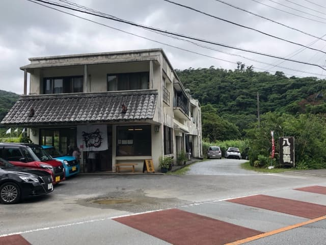
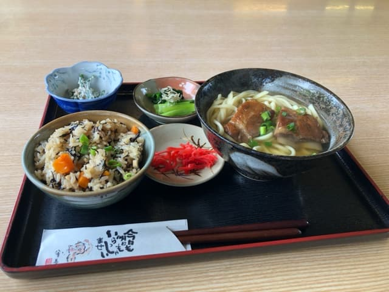

Prefectural Route 84, known as the "Okinawa Soba Highway," is a fiercely competitive area with lots of Okinawa soba shops, and in May 2023 I went to eat at one of them, "Yaezen" 😄

I went in at lunchtime on a weekday, but there weren't that many customers and I got in right away 😄 The staff bring the menu to your table and take it back right after you order, so it isn't left on the table, and I forgot to take a photo of it ^^; Sorry m(_ _)m
The "recommended menu" items are all set meals, and this time I ordered the "Soki Soba Set (small)."

Along with a small soki soba, it came with jushi (Okinawan seasoned rice) (seasoned mixed rice), which in Okinawa is a standard at home for celebrations and as an offering at the family Buddhist altar, a small dish of nigana? (it looked something like that; I don't think it was nigana) dressed with canned tuna, a small dish of boiled spinach with dried baby sardines, pickled red ginger for the soba, and, though it's not in the photo, yellow fukujinzuke pickles behind the soba. A pretty decent amount of food 😆
The soki soba has a gentle flavor while the bonito broth comes through, and it's delicious 😋 The noodles were a medium-thin straight type and slightly on the soft side. The pork spare ribs (soki) had an ordinary seasoning, were tender, and had soaked up the flavor nicely; they were delicious.
Rating (9.5/15): The bonito broth soup is nice ✌. Overall it was solidly tasty too. There are still so many more Okinawa soba shops along the "Okinawa Soba Highway" on Route 84, and it really hit me that I've still got a long way to go before conquering them all ^^; I'll keep making the rounds steadily while enjoying myself 😄
Noodles: ★★★☆☆（3）
Soup: ★★★✬☆（3.5）
Toppings: ★★★☆☆（3）